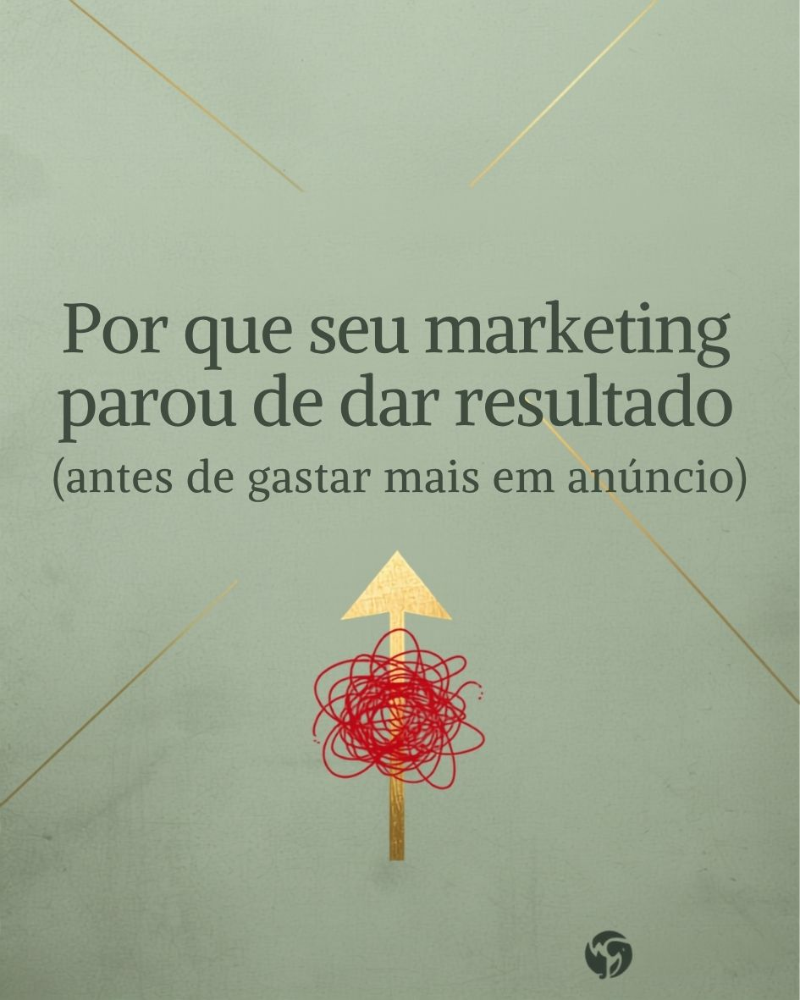
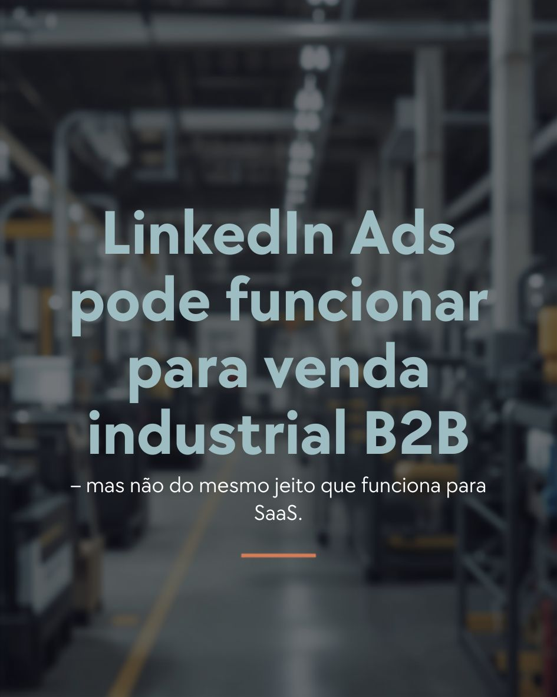
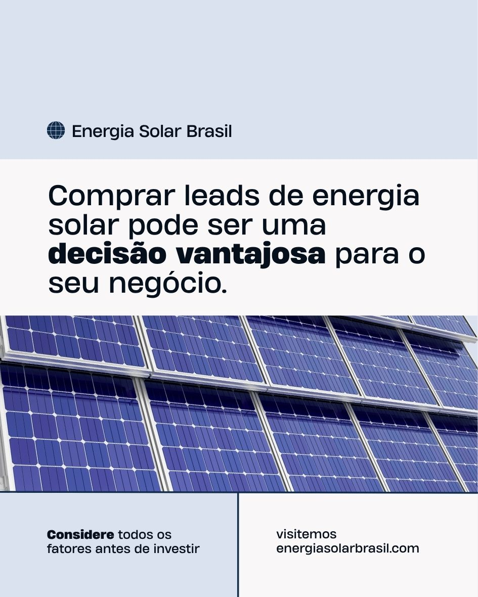
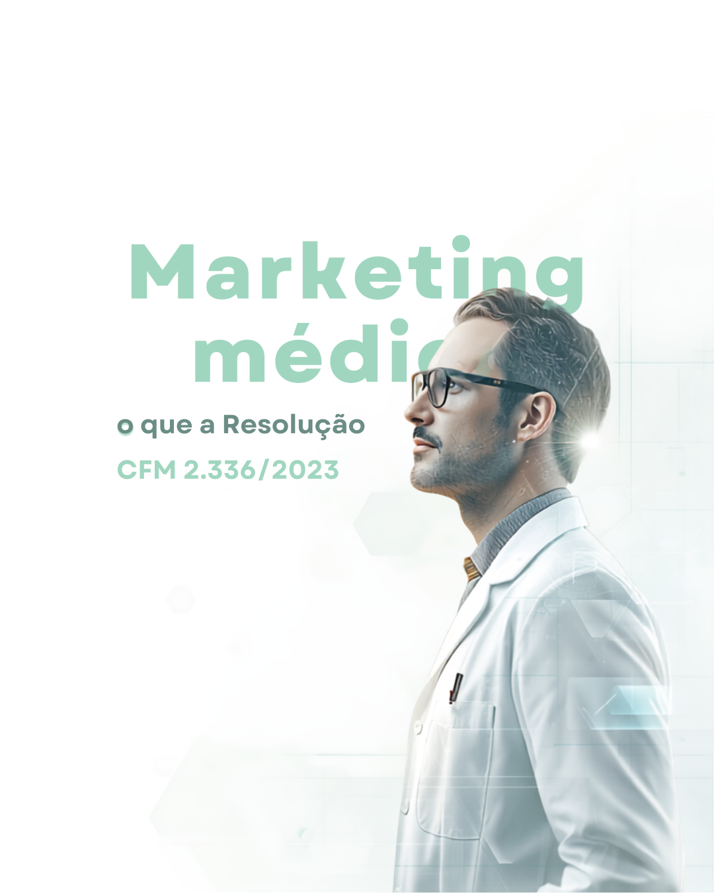
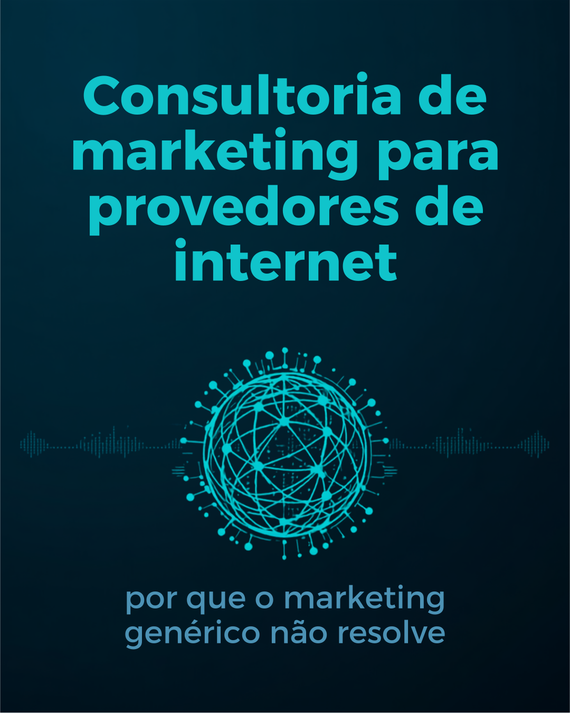
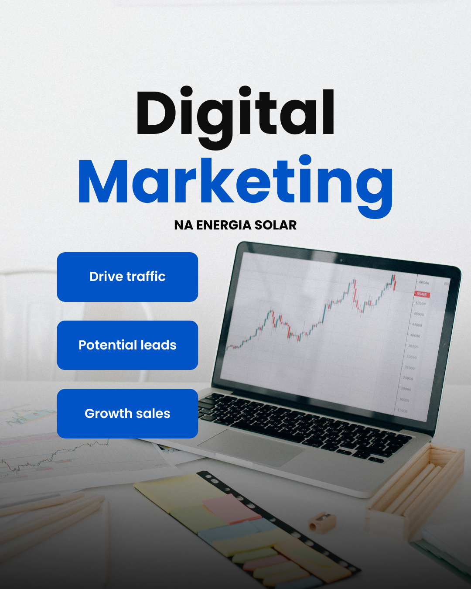
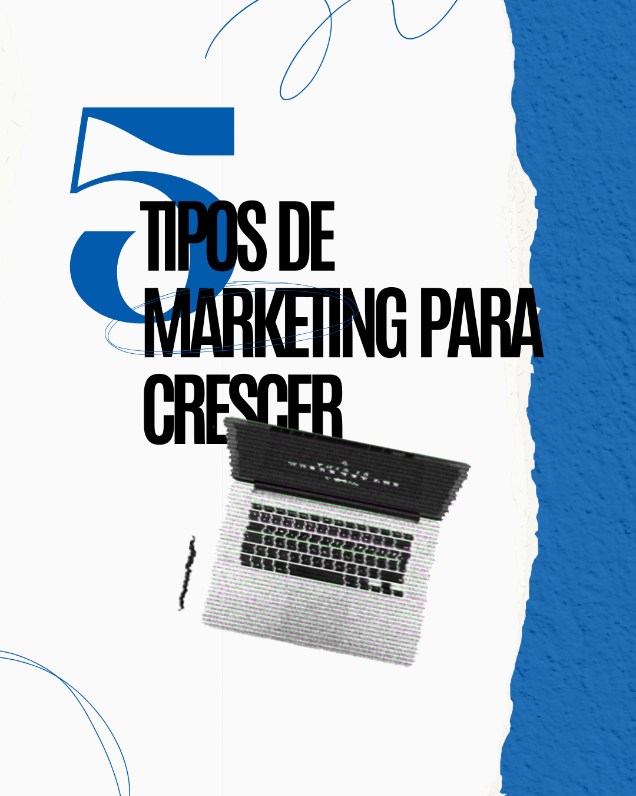
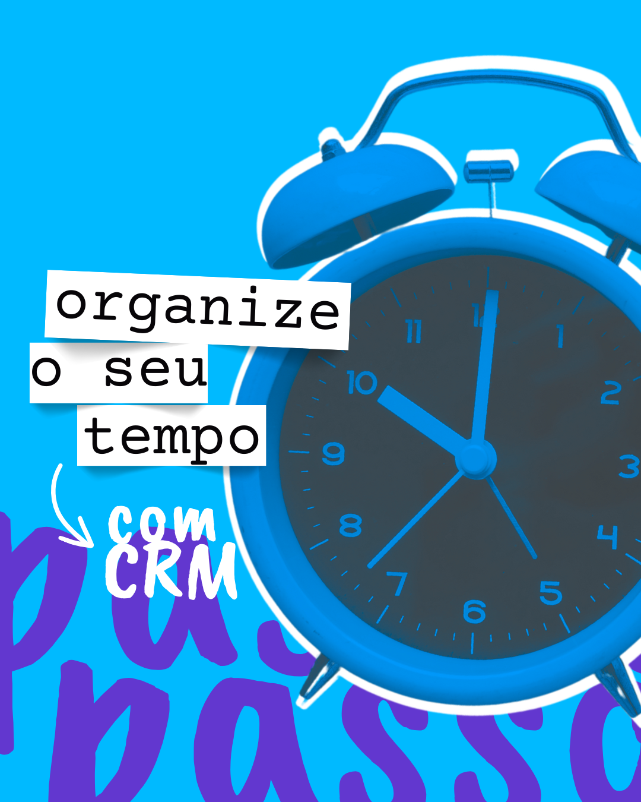

Existe consultoria de marketing especializada em SaaS no Brasil?
Por que estratégias importadas dos EUA raramente encaixam no mercado brasileiro de SaaS, e onde entra a estratégia antes do canal.
Artigos sobre gestão de marketing, estruturação comercial e crescimento consistente para empresas B2B.
Por que estratégias importadas dos EUA raramente encaixam no mercado brasileiro de SaaS, e onde entra a estratégia antes do canal.
A maioria das agências entrega campanha. Poucas entendem o negócio por trás dela antes de comunicar.
A Resolução CFM 2.336/2023 abriu novas possibilidades de comunicação — mas a estética tem um cuidado a mais.
Como falar com quem decide de fato — o síndico — em vez de vender só a marca da franquia.
Como transformar conformidade com a LGPD em argumento de venda, em vez de obstáculo.

Se aumentar o investimento em anúncio parou de trazer retorno proporcional, o problema raramente é o anúncio.

LinkedIn Ads pode funcionar para venda industrial B2B — mas não do mesmo jeito que funciona para SaaS.

A diferença entre comprar leads prontos e gerar demanda própria — e o que isso significa pro seu funil.
O que realmente sustenta captação e retenção no longo prazo, além de desconto e brinde.
Quando o custo de aquisição sobe, cortar investimento em mídia raramente resolve a causa real do problema.

O que mudou de fato na regulamentação, o que ainda é risco mesmo sendo permitido, e como ir da permissão à estratégia.

O argumento que resiste à objeção do Fio B e como reposicionar a venda diante da nova realidade tarifária.
Por que a transição tributária é também um problema de comunicação — e o risco de ficar em silêncio diante dela.
Por que monitoramento e segurança eletrônica vendem um serviço que só é percebido quando falha — e o que fazer a respeito.

Como tratar marketing como parte do negócio, não como panfleto, para reduzir churn e estruturar aquisição.

Os tipos de marketing digital mais eficientes para empresas de energia solar que querem se posicionar antes da concorrência.
Por que essa abordagem é essencial para empresas que querem crescer de forma previsível e lucrativa.

Escolher o tipo certo de marketing pode ser a diferença entre estagnar e crescer.
Duas abordagens que atendem a objetivos diferentes e exigem investimentos estratégicos em momentos específicos.
Um plano de ação estruturado, baseado em dados e comportamento do consumidor.
Escolher o tipo certo de marketing pode ser a diferença entre estagnar e crescer.

Como organizar o funil de vendas, acompanhar clientes e aumentar a produtividade da equipe comercial.
Um movimento silencioso que está mudando a forma como o comércio local se posiciona.
Enquanto o Inbound atrai clientes de forma orgânica, o Outbound aposta na prospecção ativa.
Como está o setor de marketing na sua organização — e por que ele sustenta o crescimento.